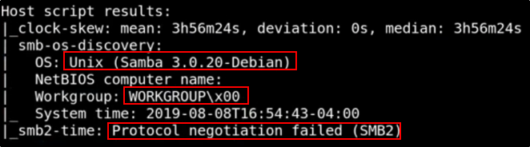
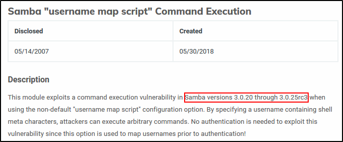
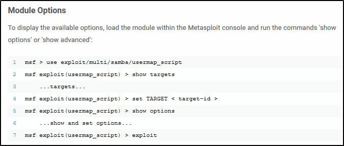

Walktrough - Lame
Linux Machine
First, start a "nmap -T4 -A -p- IPADDRESS"
Port:
21/tcp open ftp vsftpd 2.3.4 (Anon login allowed: you can put or remove files)
22/tcp open ssh OpenSSH 4.7p1 Debian 8ubuntu1 (protocol 2.0)
139/tcp open netbios-ssn Samba smbd 3.X - 4.X (Workgroup: WORKGROUP)
445/tcp open netbios-ssn Samba smbd 3.0.20 - Debian (Workgroup: WORKGROUP)
3632/tcp open distccd distccd v1 ((GNU) 4.2.4 (Ubuntu 4.2.4-1ubuntu4))
Probabily a Linux OpenWRT or Linux 2.6


################################################################
Samba
Let's get started with Samba: Better Use SMBClient
We can list folder!!!


We can list the “tmp” folder and other folders:


We could use Metasploit to find the Samba Version, but nmap provided us that:
Samba 3.0.20-Debian
Let's do a Google Search to find more about:




Use the module to exploit the machine (remember to set target and shells)


Run the exploit and you have a root shell:


################################################################
FTP
First thing to do, try to log with ftp (anonymous login)


Better search more about svftp service:


Let's try to use Metasploit:


################################################################
Distcc
Find more about Distccd:


We have the v1 version, so should be exploitable.
Better find some exploits online on Google:


We can try to use the Rapid7 one (Metasploit modules):


################################################################
Post-Exploitation: What to do
Cat the /etc/passwd file (To know more about users)


Cat the /etc/shadow file (To know the hashed passwords)


Use unshadow with the passwd file and shadow file